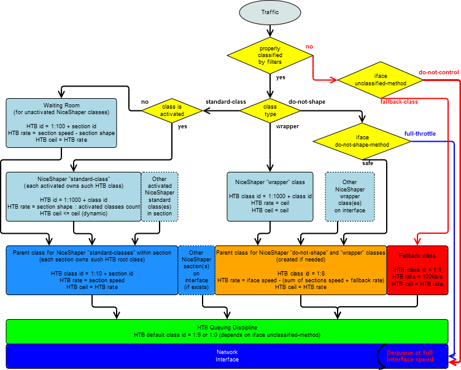

Spis treści
Wstęp i wymagania
Celem działania NiceShapera jest umożliwienie optymalnego wykorzystania łącza internetowego oraz uproszczenie konfiguracji, złożonego zagadnienia jakim jest kształtowanie ruchu sieciowego w Linuksie. Projektując rozwiązania staram się by były one elastyczne, intuicyjne i przejrzyste, by upraszczały to co niepotrzebnie skomplikowane, ale też udostępniały możliwość konfigurowania tego, nad czym warto mieć kontrolę.
Możliwe jest wstępne stworzenie dobrze działającego podziału łącza, bez zapoznania się z tą dokumentacją, używając dołączonych przykładowych plików konfiguracyjnych, pod warunkiem posiadania w miarę solidnych podstaw z zakresu działania sieci. Należy mieć jednak świadomość, że po przyjrzeniu się dołączonym przykładowym plikom konfiguracyjnym i pierwszym udanym uruchomieniu NiceShapera, warto zapoznać się z niniejszą dokumentacją by lepiej poznać dostępne funkcjonalności programu. NiceShaper bardzo się stara, ale nie jest w stanie odgadnąć wszystkich Twoich intencji, dlatego wiedza z zakresu sieci oraz systemu Linux jest ważna. Nie należy się jednak zrażać czytając dokumentację, gdyż wykracza ona poza minimum potrzebne do uruchomienia podstawowego podziału łącza. W końcu NiceShaper ma ułatwiać to co w HTB trudne, ale jednocześnie dostarczać dodatkowych możliwości.
W minimalnej konfiguracji niezbędny jest router z systemem Linux z programem iptables i wkompilowanymi w kernel: kolejką HTB, algorytmem kolejkowania SFQ oraz filtrem kernela U32.
W dalszej części dokumentacji klasy HTB nazywane będą właśnie kolejkami HTB, tak by nie były one mylone z klasami NiceShapera. SFQ i inne bezklasowe dyscypliny kolejkowania to algorytmy kolejkowania. Filtry U32 i FW to filtry kernela, by nie były mylone z filtrami NiceShapera.
W najpopularniejszych dystrybucjach Linuksa HTB, SFQ oraz filtry U32 i FW są domyślnie wkompilowane w kernel lub dostarczane w formie modułów. Program iptables, pomijając obsługę IMQ, podobnie.
Na potrzeby dokumentacji, przyjmujemy, że posiadamy router z dwoma interfejsami. Łącze internetowe podłączone jest do interfejsu eth0, sieć lokalna do eth1. Adres publiczny routera to 198.51.100.100, prywatny 192.168.0.1 a adresacja sieci lokalnej to 192.168.0.0/24.
Pomijając ograniczony ingress qdisc, którego NiceShaper nie używa, kształtowanie ruchu odbywa się na interfejsie, którym, kontrolowany ruch opuszcza router. Zatem, dla powyższych założeń, kształtowanie downloadu klientów odbywać się będzie na interfejsie eth1, gdyż pakiet z internetu wchodzi do routera interfejsem eth0 i po przeforwardowaniu, skierowany do klienta, opuszcza go właśnie interfejsem eth1. Odwrotna sytuacja zachodzi dla uploadu. Pakiet transmitowany przez klienta, wchodzi do routera przez interfejs eth1, by po przeforwardowaniu opuścić go interfejsem eth0. Zatem kształtowanie uploadu powinno się odbywać na interfejsie eth0. Należy bezwzględnie pamiętać, że ten akapit jest prawidłowy wyłącznie dla powyższych założeń i może być wymagane, dopasowanie konfiguracji, przed uruchomieniem w odmiennym środowisku!
Dobór interfejsów będzie kluczowy do zdefiniowania klas NiceShapera oraz dla części z dyrektyw konfiguracyjnych operujących na interfejsach. Przykładowo jeśli sieć LAN znajduje się za NATem i chcemy obsłużyć upload metodą markowania pakietów, mechanizm ten należało by włączyć na interfejsie eth0 (dyrektywa mark-on-ifaces eth0)
Nawiasem mówiąc, wspomniana kontrola pasma wychodzącego z sieci ukrytej za NATem, poza markowaniem pakietów, możliwa jest do zrealizowana za pomocą interfejsów IMQ. Ponadto interfejsy IMQ mogą zostać wykorzystane, do kontroli pasma przychodzącego routera. Obydwa mechanizmy zostały opisane w dalszej części dokumentacji.
Przypominam, wskazane interfejsy są poprawne dla poczynionych założeń a nie dla każdego routera!
Na koniec akapit o oznaczaniu interfejsów sieciowych. Iptables i Iproute nie rozróżniają aliasów interfejsów, które nawiasem mówiąc, są przestarzałym rozwiązaniem z czasów powszechnego stosowania polecenia ifconfig. Polecenie ifconfig zostało z powodzeniem zastąpione przez polecenie ip. Stąd w przypadku takich interfejsów z aliasami, w konfiguracji NiceShapera pomijamy część aliasową czyli dwukropek i liczbę za nim. Natomiast VLANy zapisywane w formie ethX.vid, są w pełni obsługiwane.
Uzupełniając temat obsługi VLANów w Linuksie. Jeśli podnoszony jest sub interfejs tagowany i uruchomione na nim zostaje kształtowanie ruchu, warto całkowicie zrezygnować z przypisywania adresu i podnoszenia interfejsu nietagowanego. W przeciwnym wypadku może się okazać, że kernel podda tagowane pakiety dwukrotnemu kolejkowaniu. Raz na tagowanym sub interfejsie oraz kolejny raz na fizycznym.
NiceShaper bardzo dobrze skaluje się, na routerach obsługujących do około pięciuset hostów - choć pojawiają się doniesienia o bezproblemowej pracy w większych sieciach. W takich sieciach niezbędne okazują się być tablice mieszające, których użycie w NiceShaperze, ze względu na zbyt małą elastyczność, nie jest aktualnie planowane.
Instalacja
Opis dotyczy instalacji z pakietu źródłowego. Do jej przeprowadzenia niezbędny jest kompilator c++ z pakietu gcc, biblioteki standardowe c i c++ oraz program make. Rozpakowany pakiet kompiluje się z pominięciem ./configure, gdyż NiceShaper jest nieprzenośny - działa wyłącznie pod Linuksem.
Procedura kompilacji i instalacji:
$ bunzip2 niceshaper-%{wersja}.tar.bz2
$ tar xf niceshaper-%{wersja}.tar
$ cd niceshaper-%{wersja}
$ make
$ su
# make install
Polecenie make install skopiuje skompilowany program do katalogu /usr/local/bin. Ścieżka może zostać zmieniona za pomocą zmiennej środowiskowej BINDIR. Automatycznie utworzone zostaną wymagane katalogi: /etc/niceshaper, /var/lib/niceshaper oraz /usr/share/doc/niceshaper. Przykładowe pliki konfiguracyjne zostaną skopiowane do katalogu /etc/niceshaper. Jeśli pliki konfiguracyjne już istnieją nie zostaną one nadpisane lecz pliki w nowych wersjach zostaną skopiowane z postfixem "-dist". Dokumentacja oraz pozostała zawartość pakietu zostanie skopiowana do katalogu /usr/share/doc/niceshaper.
Konfiguracja
Składnia plików konfiguracyjnych
Wymagane podstawowe pliki konfiguracji to /etc/niceshaper/config.conf oraz /etc/niceshaper/class.conf.
include file ścieżka - Dyrektywa include użyta w tych plikach pozwala włączać kolejne. Dyrektywa include obsługuje ścieżki absolutne (z rozpoczynającym znakiem slash) oraz relatywne do katalogu konfiguracyjnego (domyślnie /etc/niceshaper).
Sama konfiguracja składa się z dyrektyw i parametrów, których kolejność nie jest istotna a składnia to:
parametr wartość [wartość] - Czyli parametr z przypisaną mu jedną lub listą, rozdzielonych białymi znakami, wartości, np.:
dyrektywa parametr wartość [parametr wartość] - Czyli dyrektywa z listą parametrów i wartości, wymienionych parami, np.:
section speed 20Mb/s shape 19Mb/s
Parser konfiguracji automatycznie rozbija podane wartości lub pary parametrów z wartościami. Stąd w ramach własnych preferencji, powyższe przykłady, można również zapisać następująco:
- ceil 5Mb/s
- run dl
- run ul
- section speed 20Mb/s
- section shape 19Mb/s
Wyjątkami od powyższych zasad są dyrektywy: host, class, match, nagłówki sekcji oraz nagłówki makr. Ich składnia opisana jest w dalszej części konfiguracji.
Poza różnicami składniowymi dyrektywy dzielą się, ze względu na zasięg funkcjonowania, na: dyrektywy sekcji global, dyrektywy sekcji funkcjonalnych oraz dyrektywy klas. Jeśli chodzi o dyrektywy klas, wszystkie poza nagłówkiem oraz filtrem mogą zostać umieszczone w konfiguracjach sekcji funkcjonalnych, w efekcie dostarczając wartości domyślnych dla wszystkich klas wchodzących w skład takiej sekcji.
Podstawowe jednostki przepustowości to b/s (bit na sekundę), oraz B/s (bajt na sekundę). Poprawne przedrostki to k (kilo) oraz M (Mega). Dopisek '/s' nie jest obowiązkowy a rozróżnienie między przepustowością a ilością przesłanych danych odbywa się na podstawie kontekstu. Jednostką domyślną przepustowości jest b/s (bit na sekundę).
NiceShaper udostępnia kilka znaków specjalnych. Znak "#" jest komentarzem i odnosi się do reszty linii występującej za nim. Znaki "<# komentarz #>" również tworzą komentarz, z tą różnicą że stosuje się je w parze a obejmują dowolny wycinek linii konfiguracyjnej. Oczywiście zakomentowana część konfiguracji nie jest brana pod uwagę. Kolejny znak specjalny, znak średnika, zastępuje przejście do nowej linii konfiguracji, pozwala zminimalizować długość pliku konfiguracyjnego klas, czasem pozytywnie a czasem negatywnie wpływa na czytelność.
Każda zmiana konfiguracji wymagają zrestartowania programu.
Wszystkie konfiguracje dostarczone z pakietem są tylko przykładami i nie są optymalne dla każdej sieci - choć są dobrym materiałem wyjściowym do poznania programu.
Główny plik konfiguracyjny, na przykładzie
Domyślnie głównym plikiem konfiguracyjnym jest plik /etc/niceshaper/config.conf. Jest on podzielony na sekcje. Do prawidłowego działania niezbędna jest, zawierająca główną konfiguracje programu, sekcja o nazwie global. Dodatkowo minimum jedna a w praktyce dwie, lub nawet więcej, sekcje funkcjonalne. Sekcja funkcjonalna, z reguły, odzwierciedla jeden z kierunków przepływu ruchu przez łącze internetowe, podłączone do obsługiwanego routera. Podsumowując, każde łącze obsługiwane jest przez minimum dwie sekcje funkcjonalne. Każda sekcja dysponuje własną konfiguracją, listą klas NiceShapera oraz parametrami domyślnymi dla tych klas. W skład sekcji wchodzić mogą klasy pracujące na różnych interfejsach, a na każdym interfejsie pracować mogą, klasy wchodzące w skład różnych sekcji (o ile obsługują ten sam kierunek ruchu).
Przykładowa zawartość głównego pliku konfiguracyjnego:
- <global>
-
- run dl ul
- mark-on-ifaces eth0
- local-subnets 192.168.0.0/24
- auto-hosts dl eth1 ul eth0
- status unit kb/s
- status file /var/www/niceshaper/status.txt
- status file-owner root file-group root file-mode 644
- log syslog yes
- log terminal yes
- log file no
- <dl>
-
- section speed 20Mb/s
- section shape 18Mb/s
- mode download
- reload 2s
- low 256kb/s
- ceil 5Mb/s
- strict 70
- <ul>
-
- section speed 2Mb/s shape 1800kb/s
- mode upload
- reload 1s
- low 64kb/s
- ceil 256kb/s
- strict 70
Dyrektywy i parametry sekcji global:
- run - Lista sekcji na potrzeby których uruchomione zostaną instancje NiceShapera.
- mark-on-ifaces - Lista interfejsów na których włączona zostanie funkcjonalność markowania pakietów. Co w zakresie iptables oznacza wprowadzenie reguł do tabeli mangle a w miejsce filtrów kernela U32 użyte zostaną filtry FW. Opcja ta jest niezbędna by kontrolować upload hostów z adresacją prywatną poddawanych maskowaniu na adres publiczny routera lub korzystać z możliwości filtrowania które posiada iptables, lecz już filtr U32 nie.
- local-subnets - Lista sieci lokalnych podłączonych bezpośrednio do interfejsów routera. W przestrzeni iptables wszystkie pakiety kierowane do wskazanych podsieci, trafiają do łańcucha ns_dwload a pakiety wychodzące z nich do łańcucha ns_upload.
- lang en|pl - Określa język komunikatów. Domyślnie definiowany przez zmienną środowiskową LANG. Aktualnie poza domyślnym językiem angielskim, obsługiwana jest wartość pl_PL.UTF-8 tej zmiennej.
- auto-hosts sekcja interfejs [sekcja interfejs] - Oczekiwane są pary składające się z sekcji funkcjonalnych oraz interfejsów sieciowych. Ta dyrektywa może wydać się zawiła, łatwiej można ją zrozumieć analizując plik class.conf. Dzięki funkcjonalności auto-hosts można bardzo łatwo i szybko uruchomić podział łącza, używając dyrektywy host w pliku class.conf, po prostu definiując listę hostów w sieci lokalnej, używając ich adresów IP oraz przyporządkowując im wybrane nazwy. Dyrektywa auto-hosts wskazuje sekcje funkcjonalne, które mają zawierać, automatycznie utworzone w miejsce dyrektywy host klasy, oraz wskazuje interfejsy na których te klasy będą umieszczone.
- iface-<dev> {speed|do-not-shape-method|unclassified-method|fallback-rate|mode} - Konfiguracja interfejsów sieciowych. Nazwa dyrektywy zawiera w sobie nazwę interfejsu (z pominięciem oznaczenia aliasu) np. iface-eth0, iface-imq1 itp.
-
- speed - Określa fizyczną przepustowość wychodzącą interfejsu, np. dla ethernetu będzie to 100Mb/s czy 1000Mb/s. Parametr ten jest wymagany, dla wszystkich interfejsów na których zdefiniowano klasy typu wrapper albo do-not-shape z parametrem interfejsu do-not-shape-method safe.
- do-not-shape-method safe|full-throttle - Konfiguracja sposobu kolejkowania klas typu do-not-shape na interfejsie. Domyślnie: safe.
-
- safe - Filtry kernela klas typu do-not-shape przekazują ruch do wspólnej nadrzędnej kolejki HTB, opisanej we wstępie do współpracy NiceShapera z HTB. Takie rozwiązanie nie zapewnia przesyłania pakietów pomiędzy routerem a siecią lokalną z pełną prędkością interfejsu, lecz w pewnym stopniu chroni ruch obsługiwany przez standardowe klasy.
- full-throttle - Ruch z klas typu do-not-shape nie będzie kierowany do wspomnianej kolejki HTB, opuści on interfejs z pełną prędkością bez kolejkowania. Należy mieć na uwadze że tym sposobem można spowodować pełne wysycenie możliwości interfejsu sieciowego przez klasy typu do-not-shape. W efekcie uniemożliwiając sprawne kolejkowanie ruchu obsługiwanego przez klasy standardowe. Wartość full-throttle nie jest zalecana.
- unclassified-method fallback-class|do-not-control - Wybór sposobu obsługi niesklasyfikowanego przez utworzone filtry ruchu. Domyślnie: fallback-class. UWAGA: Niekontrolowany ruch nigdy nie powinien się na żadnym z kontrolowanych interfejsów pojawić, wszystko co opuszcza interfejs musi posiadać pasujący filtr.
-
- fallback-class - Niesklasyfikowany przez filtry ruch zostaje przesłany do kolejki awaryjnej, gdzie następuje jego zdławienie, by w jak najmniejszym stopniu wpływał na wykorzystanie pasma internetowego.
- do-not-control - Przywraca zachowanie z wersji 1.0pre3 i wcześniejszych, czyli pakiety niesklasyfikowane opuszczające interfejs nie są kontrolowane. Jest to wysoce niepożądane zachowanie, jednak opcja istnieje dla wygody osób przyzwyczajonych do tamtego nieprzemyślanego sposobu działania.
- fallback-rate - Pasmo przyporządkowane kolejce awaryjnej która obsługiwać będzie pakiety wychodzące interfejsem, które nie zostały sklasyfikowane do żadnej klasy na nim występującej. To nic innego jak kolejka HTB wskazana jako domyślna. By podział łącza mógł działać poprawnie do tej kolejki nie powinno nigdy nic wpadać. Domyślnie: 100kb/s.
- mode download|upload - Klasy typów wrapper oraz do-not-shape, jeśli występują samodzielnie na interfejsie (to znaczy, bez towarzystwa klas standardowych), wymagają wskazania kierunku przepływu kontrolowanego na tym interfejsie ruchu.
- status {unit|classes|sum|do-not-shape|file|file-owner|file-group|file-mode|file-rewrite} - Wyświetlanie statystyk pracy. 4 ostatnie parametry mają zastosowanie tylko jeśli automatyczny zrzut został uruchomiony.
-
- unit - Wyświetlane jednostki przepustowości. Domyślnie: kb/s.
- classes all|active|working|no - Klasy wyświetlane w statystykach. Domyślnie: working.
-
- all - Wyświetla wszystkie skonfigurowane klasy.
- active - Wyświetla klasy które wykazały aktywność.
- working - Wyświetla klasy które wykazały ostatnią aktywność w czasie krótszym od ustawienia parametru hold.
- sum top|bottom|no - Miejsce wyświetlania podsumowania obciążenia sekcji.
- do-not-shape yes|no - Włącza wyświetlanie klas typu do-not-shape. Uwaga: Ta opcja załącza wykorzystywanie iptables, tzn. załadowanie reguł dla wszystkich klas w sekcjach zawierających klasy typu do-not-shape oraz w innych sekcjach o tym samym mode. Domyślnie: no.
- file plik|no - Włącza funkcjonalność automatycznego zrzucania statystyk do wskazanego pełną ścieżką pliku. Domyślnie: no.
- file-owner - Ustawia systemowego właściciela pliku. Domyślnie: root.
- file-group - Ustawia systemową grupę do której należy plik. Domyślnie: root.
- file-mode - Ustawia uprawnienia do pliku w trybie numerycznym. Domyślnie: 644. .
- file-rewrite - Ustawia częstotliwość automatycznego zrzucania statystyk do pliku w sekundach. Przyjmuje wartości od 1s do 3600s. Wraz z obniżaniem wartości tego parametru zwiększa się częstotliwość generowanych operacji dyskowych. Domyślnie: 30s.
- listen {address|password} - Proces NiceShapera, działający w tle, jeśli wykonano komendę niceshaper status lub niceshaper show, odsyła żądane dane za pomocą protokołu TCP/IP. Dzięki tej dyrektywie możliwe jest uruchomienie opcji połączenia zdalnego, umożliwiając, np. zdalny odczyt statystyk pracy (chociażby ze stacji roboczej Administratora).
-
- address ip[:port] - Ze względów bezpieczeństwa proces NiceShapera nasłuchuje domyślnie na adresie 127.0.0.1 i porcie 6423/TCP, więc nie daje, możliwości nawiązania połączenia z poza maszyny lokalnej. Parametr przełącza nasłuchiwanie na wskazany lokalny adres IP i opcjonalnie niestandardowy port, umożliwiając, zdalne połączenie się z pracującym procesem. Połączenie takie nawiązuje niceshaper uruchomiony z komendą status lub show i parametrem --remote.
- password - Domyślne hasło dostępu jest losowe. Uruchomiony lokalnie niceshaper status lub niceshaper show omija, potrzebę wpisywania danych dostępowych, odczytując obowiązujące hasło wraz adresem ip i portem z pliku /var/lib/niceshaper/supervisor.info. Jeśli planowane jest, udostępnienie funkcjonalności połączeń zdalnych z działającym procesem, ustawić należy własne hasło. Zaś by połączyć się ze zdalnego hosta z procesem NiceShapera, z użyciem ustawionego hasła, należy je wskazać za pomocą parametru uruchomieniowego --password.
- log {syslog|terminal|file} - Metody logowania komunikatów.
-
- syslog yes|no - Logowanie do sysloga. Domyślnie: yes.
- terminal yes|no - Domyślnie: yes, po poprawnej inicjalizacji zostaje automatycznie wyłączone.
- file plik|no - Logowanie do wskazanego pełną ścieżką pliku. Domyślnie: no.
- iptables {download-hook|upload-hook|imq-autoredirect} - Parametry odnoszące się bezpośrednio do iptables w systemie.
-
- download-hook PREROUTING|POSTROUTING - Pozwala zmienić łańcuch startowy dla trybu download. Domyślnie: POSTROUTING. Zmiana tego parametru tylko w uzasadnionych przypadkach, ale nie jest zalecana.
- upload-hook PREROUTING|POSTROUTING - Pozwala zmienić łańcuch startowy dla trybu upload. Domyślnie: POSTROUTING, w wersjach 1.2pre1 i starszych: PREROUTING. Zmiana tego parametru tylko w uzasadnionych przypadkach, ale nie jest zalecana.
- target ACCEPT|RETURN - Ostateczny cel wszystkich utworzonych przez NiceShapera filtrów. Domyślnie: ACCEPT.
- imq-autoredirect yes|no - Automatyczne przekierowanie na interfejsy IMQ. Domyślnie: yes.
- fallback {iptables} - W razie problemów z niektórymi mechanizmami, pozwala na awaryjne uruchomienie za pomocą innych mniej zaawansowanych metod.
-
- iptables - Uruchomienie NiceShapera z dużą liczba klas -jeśli generowane są reguły iptables- jest czasochłonne, dlatego od wersji 1.0pre2 używane są programy iptables-save i iptables-restore. Ta opcja pozwala powrócić do wprowadzania filtrów za pomocą programu iptables.
- debug {iptables} - Wyświetla przekazywane do systemu instrukcje.
-
- iptables - Jeśli włączono fallback iptables, wyświetla instrukcje przekazywane iptables. W przeciwnym razie pozostawia do wglądu, plik użyty do utworzenia łańcuchów iptables.
Dyrektywy i parametry sekcji funkcjonalnych:
- section {speed|shape|htb-burst|htb-cburst} - Ogólne parametry pracy sekcji (zwykle parametry łącza lub przyporządkowanej części).
-
- speed - Wydajność pasma. Jednak stabilnie osiągalna a nie jedynie deklarowana przed ISP.
- shape - Poziom obciążenia do którego NiceShaper ma dążyć. Zalecana wartość tego parametru to zakres w granicach 90-95%, wartości section speed. W praktyce najlepsze rezultaty dają wartości raczej bliższe zalecanym 90% dla łącz o przepustowości poniżej 1Mbit/s lub bardzo obciążonych a bliższe zalecanym 95% dla łącz o przepustowości kilkunastu i więcej Mbit/s lub słabo obciążonych. Jeśli ten parametr zostanie ustawiony zbyt wysoko, będzie cierpiał ruch interaktywny. Jeśli zbyt nisko, duża część pasma pozostanie niewykorzystana. Częstym błędem jest określanie tu tak wysokiej wartości że obciążenie łącza nigdy jej nie przekracza. Wtedy NiceShaper nie spełnia swej roli, a użytkownicy utrzymują mimo przeciążenia, maksymalne przydziały pasma. Dla NiceShapera sygnałem do "obcinania" klas jest, właśnie, przekroczenie tej wartości przez obciążenie łącza a precyzyjnie przez sumę obciążenia wygenerowanego przez klasy wchodzące w skład sekcji.
- htb-burst - Burst dla kolejki tworzonej dla sekcji, jako nadrzędna do kolejek klas. Burst zostało szerzej opisane w opisie parametru htb burst klas. Domyślnie wyliczane automatycznie, jednak nie niższe od najwyższego burst klas podległych sekcji, jeśli ustalono.
- htb-cburst - Jak htb-burst jednak dla ceil.
- reload - Częstotliwość uruchamiania sekcji, w sekundach. Wartości w zakresie 1s do 5s są efektywne i jednocześnie nie powodują generowania dużego obciążenia. Na maszynach wyposażonych w wydajny i słabo obciążony procesor, warto zwiększać częstotliwość uruchamiania, co usprawni reagowanie na zmieniające się warunki działania. Dla dużej liczby sekcji lub klas, gdy generowane obciążenie jest zbyt wysokie, rozważyć należy zwiększanie wartości parametru. By pomóc w doborze odpowiedniej wartości, uruchomione sekcje, co godzinę generują i logują, raporty obciążenia. Wartość parametru musi się mieścić w przedziale 0.1s do 60s z krokiem 0.1s. Duże wartości mają coraz mniej wspólnego z dynamicznym podziałem, w praktyce wprowadzając podział statyczny. Używanie wartości przekraczających 5s nie jest zalecane, w takich warunkach NiceShaper nie jest w stanie, sprawnie się dopasowywać, do zachodzących zmian obciążenia.
- mode download|upload - Parametr ten konfiguruje, sposób obsługi sekcji w przestrzeni iptables. Dla wszystkich sekcji pracujących w trybie download, tworzony jest wspólny łańcuch o nazwie ns_dwload, do którego przekierowanie, następuje z łańcucha wbudowanego POSTROUTING. Analogicznie dla sekcji typu upload, tworzony jest łańcuch o nazwie ns_upload, domyślnie również z przekierowaniem z łańcucha POSTROUTING (w wersjach 1.2pre1 i starszych był to łańcuch PREROUTING). Ewentualnie dla użytkowników zaawansowanych, zmianę łańcuchów wbudowanych, można osiągnąć za pomocą dyrektywy iptables oraz jej opcji download-hook i upload-hook.
W konfiguracji sekcji umieścić można każdą z dyrektyw i parametrów klas (opisanych w dalszej części dokumentacji), stają się one wtedy domyślnymi dla wszystkich klas tej sekcji.
Hosty i klasy NiceShapera
Plik /etc/niceshaper/class.conf zawiera definicję hostów i/lub klas. Klasy można uznać za odpowiednik lub bardziej rozszerzenie kolejek w HTB. Składniowo klasa zbudowana jest z nagłówka, minimum jednego filtra oraz opcji konfiguracyjnych. Odpowiadająca klasie kolejka w HTB jest tworzona kiedy klasa wykazuje aktywność a wyładowywana po ustalonym czasie bezczynności. Dzięki temu w tym samym czasie w HTB występują kolejki wyłącznie aktywnych klas a nie wszystkich zdefiniowanych, co daje optymalne wartości parametru rate kolejek HTB. Każdy pakiet opuszczający interfejs, zostaje sklasyfikowany za pomocą filtrów, do pierwszej pasującej klasy (faktycznie do kolejki HTB).
Należy zadbać, by zadeklarowane klasy NiceShapera obsługiwały, cały wykorzystujący łącze ruch. W przeciwnym razie pojawią się niemożliwe do kontrolowania przecieki. Np. w przypadku gdy nie wszystkie hosty w sieci lokalnej zostaną przypisane do klas, te niekontrolowane będą odbierały pasmo pozostałym.
Hosty:
Klasy są zaawansowanym oraz bardzo elastycznym narzędziem. Jednak to dyrektywa host jest najczęściej wystarczającym i jednocześnie bardzo przyjaznym oraz przejrzystym sposobem, na stworzenie sprawiedliwego podziału łącza dla wszystkich lub większości standardowych użytkowników sieci. Jest to jeden z tych elementów, dzięki którym konfiguracja podziału łącza w NiceShaperze jest tak wygodna. Dyrektywa host umożliwia wygodną konfigurację podziału łącza, nawet bez zapoznawania się z klasami, po prostu spisując listę adresów IP wszystkich hostów obsługiwanych w sieci lokalnej i przydzielając im dowolne nazwy!
Do zdefiniowania hosta potrzebne są: lista sekcji w których ma on być umieszczony wraz z interfejsami na których ma następować kształtowanie ruchu, adres IP oraz nadana nazwa. Host może należeć do dowolnych z uruchomionych sekcji, ale musi należeć przynajmniej do jednej. Sekcje oraz interfejsy kopiowane są wprost z dyrektywy auto-hosts, więc nie ma potrzeby każdorazowego powtarzania tej listy.
Można przyjąć, że dyrektywa host to funkcjonalnie pewnego rodzaju makro NiceShapera. NiceShaper sam zajmie się przetłumaczeniem dyrektywy host na odpowiednie klasy i filtry.
Definicja hosta mieści się zawsze w jednej linii. Składniowo wygląda następująco:
host ip nazwa
Przykładowo:
- host 192.168.0.10 pc10
- host 192.168.0.11 pc11
Powyższe przykładowe definicje hostów zostaną, przez parser konfiguracji, rozłożone na następujące klasy:
- class dl eth1 pc10
- match dstip 192.168.0.10
- class ul eth0 pc10
- match srcip 192.168.0.10
- class dl eth1 pc11
- match dstip 192.168.0.11
- class ul eth0 pc11
- match srcip 192.168.0.11
NiceShaper wstawia do filtrów test dstip lub srcip, zależnie od trybu sekcji.
Host wskazywany jest wyłącznie za pomocą adresu IP. Tam gdzie potrzebne są dodatkowe możliwości filtrowania lub nadpisywania parametrów domyślnych, tam wkraczają klasy.
Budowa klasy:
W aktualnej wersji NiceShaper udostępnia 4 typy klas. Są to klasa standardowa oraz klasy o specjalnym przeznaczeniu: virtual, wrapper oraz do-not-shape. Przy czym klasy typu virtual opisane zostały w rozdziale "Klasy typu virtual" a ostatnie dwie w rozdziale "Jak traktować ruch z i do routera".
Definicję klasy rozpoczyna nagłówek klasy a kończy nagłówek kolejnej:
- class sekcja interfejs nazwa - Nagłówek klasy standardowej. Klasa tego typu funkcjonuje w ramach sekcji do której należy i podlega dynamicznemu podziałowi.
Gdzie:
- sekcja - Sekcja w skład której wchodzi klasa.
- interfejs - Interfejs wychodzący (egress) na którym realizowane jest kolejkowanie, czyli utworzona zostanie klasa HTB.
- nazwa - Nazwa klasy, wyświetlana m.in. przez polecenie niceshaper status.
Obowiązkowym parametrem ciała klasy jest filtr:
match test <test> [test <test>]
Filtry wskazują ruch którym dana klasa będzie zarządzać. Oczywiście mowa tu o ruchu wychodzącym czyli opuszczającym router, interfejsem na którym klasa działa. Jeśli zachodzi taka potrzeba, co opisane zostało już w rozdziale "współpraca z iptables", odpowiednie wpisy tworzone są przez NiceShapera w iptables w łańcuchu sekcji, jak i tworzony jest filtr kernela, za zadanie mający kierowanie ruchu do odpowiedniej kolejki HTB kształtującej pasmo. Naturalnie testy można ze sobą łączyć, by uzyskać bardziej szczegółowe filtry, zaś w skład klasy wchodzić może dowolna liczba filtrów.
Przykładowa najprostsza klasa ma postać:
- class dl eth1 pc55
- match dstip 192.168.0.55
Lub przykłady w zwiniętej postaci (w dalszej części dokumentacji używany jest pierwszy sposób zapisu):
- class dl eth1 pc55; match dstip 192.168.0.55
Dyrektywy i parametry klas:
- low - Minimalne przydzielone klasie pasmo. Domyślnie: 8b/s. Dodatkowo jeśli wykorzystanie pasma przez klasę jest niższe od tej wartości, przy ścinaniu klasa nie jest w ogóle brana pod uwagę przez algorytm podziału.
- ceil - Maksymalne przydzielone klasie pasmo. Domyślnie równe section shape.
- rate - Stały przydział pasma - wyłączenie klasy z dynamicznego podziału.
- strict 0 - 100 - Jest to kluczowy, służący priorytyzacji klas, parametr algorytmu dynamicznego podziału. Parametr strict wskazuje, za pomocą procenta w przedziale od low do ceil, próg zwiększonej odpowiedzialności klasy za występujące przeciążenie. Domyślna wartość to 70. Dla przykładu: dla low równego 100kB/s i ceil równego 200kB/s, gdy strict wynosi 50, próg zwiększonej odpowiedzialności to poziom 150kB/s, a dla strict równego 70 to 170kB/s. Przeciążenie to stan, gdy obciążenie w sekcji przekracza wartość parametru section shape. Czym niższa jest wartość tego parametru, w stosunku do pozostałych klas, tym bardziej restrykcyjnie traktowana jest dana klasa. Analogicznie, wyższa wartość, to zwiększona pobłażliwość względem danej klasy. Precyzyjniej, wyznaczona odpowiedzialność klasy za przeciążenie, jest funkcją wartości parametru strict i wygenerowanego przez klasę obciążenia. Ta funkcja jest funkcją liniową narastającą, złożoną z kilku prostych. Jeśli wygenerowane obciążenie jest niższe lub równe low, funkcja daje zerowy stopień odpowiedzialności. Z przedziału pomiędzy low a wyznaczoną przez strict wartością, niski. Gdy obciążenie jest równe wyznaczonemu przez strict, występuje dokładnie średni stopień odpowiedzialności. Przy obciążeniu ją przekraczającym, wysoki. Maksymalna odpowiedzialność występuje, przy obciążeniu równym wartości ceil.
- hold - Czas nieaktywności po którym kolejka HTB klasy zostaje usunięta. Domyślnie: 30s.
- set-mark - Parametr ma zastosowanie w sytuacji, kiedy włączono za pomocą dyrektywy mark-on-ifaces, markowanie pakietów na interfejsie klasy. Wtedy pozwala ustawić wartość znacznika. Domyślnie każda klasa automatycznie otrzymuje odpowiednią wartość znacznika. Więcej w "Obsługa markowania pakietów".
- htb {prio|scheduler|burst|cburst} - Parametry odnoszące się bezpośrednio do skonfigurowanych kolejek HTB.
-
- prio - Priorytet dla kolejki HTB, przyjmuje wartości od 0 do 7, przy czym niższa wartość to wyższy priorytet. Domyślnie: 5.
- scheduler sfq|esfq|no - Wybór algorytmu kolejkowania dla kolejki HTB. Domyślnie: sfq.
- burst - Ustala jak duża porcja danych może zostać wysłana z pełną prędkością interfejsu bez przechodzenia do obsługi ruchu z kolejnej klasy. Może mieć pozytywny wpływ dla klas obsługujących ruch www lub inny o podobnym charakterze. Domyślnie burst jest wyliczane przez algorytm pobrany z pakietu iproute, niestety czasem wartość w ten sposób wyliczana jest zbyt niska (dotyczy to również programu tc), mogąc powodować trudności w wysycaniu pasm o przepustowości kilkudziesięciu megabitów z dużą liczbą pracujących jednocześnie klas. Ten problem najmocniej dotyczy jednak nie samych klas a kolejek tworzonych automatycznie dla wszystkich sekcji, jako nadrzędne dla kolejek klas. W przypadku stwierdzenia problemów z wysycaniem dużych łącz, spróbować można zwiększać wartość burst rozpoczynając od burst i cburst dla kolejek sekcji, patrz section htb-burst i section htb-cburst.
- cburst - Jak wyżej tylko dla ceil.
- sfq {perturb} - Konfiguracja algorytmu kolejkowania SFQ jeśli zostanie użyty w ramach klasy.
-
- perturb - Parametr perturb dla SFQ. Domyślnie: 10.
- esfq {perturb|hash} - Konfiguracja algorytmu kolejkowania ESFQ jeśli zostanie użyty w ramach klasy.
-
- perturb - Parametr perturb dla ESFQ. Domyślnie: 10
- hash classic|src|dst - Hash ESFQ. Domyślnie: classic.
Jak już wspomniano, wszystkie powyższe dyrektywy i parametry mogą zostać użyte w konfiguracji sekcji, by parametrów nie powtarzać dla każdej klasy z osobna. Następnie jeśli zaistnieje potrzeba zróżnicowania ustawień poszczególnych klas, nadpisać wybrane z nich.
Testy podstawowe:
- proto tcp|udp|icmp - Protokół.
- srcip - Adres źródłowy.
- dstip - Adres docelowy.
- srcport|sport - Port źródłowy. Wymaga wskazania protokołu tcp lub udp.
- dstport|dport - Port docelowy. Wymaga wskazania protokołu tcp lub udp.
- from-local - Ułatwia kontrolę pakietów wysyłanych przez router. Zastępuje srcip a wskazany adres, musi być poprawnie skonfigurowany na jednym z interfejsów routera. W sytuacji kiedy iptables hook sekcji to PREROUTING lub interfejs klasy to interfejs pracujący w trybie upload, zostaje utworzony duplikat filtra bezpośrednio w łańcuchu POSTROUTING z celem w łańcuchu sekcji. Zabieg ten jest niezbędny, by pakiety wychodzące z routera pojawiły się w łańcuchu sekcji.
- to-local - Umożliwia kontrolę pakietów odbieranych przez router. Działa analogicznie jak from-local z tą różnicą, że zastępuje test dstip a dodatkowe dowiązanie, tworzone jest w łańcuchu PREROUTING, jeśli iptables hook sekcji to POSTROUTING lub interfejs klasy to interfejs pracujący w trybie download.
- out-iface - Interfejs którym pakiet opuszcza router. Do reguł iptables zostaje dodany podany interfejs, jako interfejs wychodzący. Ma zastosowanie wyłącznie wtedy gdy interfejsem klasy jest interfejs IMQ, wskazując interfejs fizyczny.
- in-iface - Interfejs którym pakiet wchodzi do routera. Do reguł iptables zostaje dodany podany interfejs, jako interfejs wchodzący. Analogicznie, ma zastosowanie wyłącznie wtedy gdy interfejsem klasy jest interfejs IMQ.
srcip oraz dstip mogą wskazywać adres ip lub podsieć adresów o zasięgu zdefiniowanym w standardowy sposób przez maskę, zapisaną w formacie bitowym lub kropkowo-dziesiętnym. Maska nie musi być ciągła (np. 255.255.128.255) jednak należy pamiętać że takiej sytuacji nie obsługuje filtr kernela U32 i dla masek nieciągłych trzeba posłużyć się markowaniem pakietów.
Przykładowe filtry:
- match srcip 192.168.0.77 - Pakiety pochodzące z adresu 192.168.0.77.
- match srcip 192.0.2.1 srcport 110 dstip 192.168.0.0/29 proto tcp - Poczta pobierana z 192.0.2.1 do podsieci 192.168.0.0/29.
Testy wymagające włączonego markowania na interfejsie:
Filtr pakietów iptables został zaopatrzony w olbrzymią liczbę filtrów, które nie są niestety możliwe do zrealizowania przy użyciu filtra kernela U32. Dlatego też poniższe filtry wymagają włączenia markowania pakietów za pomocą dyrektywy mark-on-ifaces. Każdy pakiet dopasowany i oznaczony przez automatycznie wprowadzone reguły iptables, może już być bez problemu skierowany do odpowiedniej kolejki HTB a to dzięki filtrowi kernela FW który w efekcie użycia dyrektywy mark-on-ifaces zostaje użyty w miejsce filtra U32.
Uwaga. Niektóre z poniższych filtrów mogą nie działać na okrojonej kompilacji kernela i/lub iptables.
- not-srcip - Adres źródłowy inny niż podany.
- not-dstip - Adres docelowy inny niż podany.
- not-srcport|not-sport - Port źródłowy inny niż podany (należy wskazać protokół tcp lub udp).
- not-dstport|not-dport - Port docelowy inny niż podany (należy wskazać protokół tcp lub udp).
- length - Długość pakietu w bajtach, np. 500, :500( od 0 do 500), 500: (500 i większe), 128:500 (128 do 500).
- state new|established|related|invalid|untracked - Stan pakietu:
-
- new - Pakiet rozpoczyna nowe połączenie.
- established - Pakiet należy do nawiązanego połączenia.
- related - Pakiet rozpoczynający nowe połączenie jednak powiązany z istniejącą konwersacją (np. transfer danych po ftp).
- invalid - Pakiet nie może zostać rozpoznany.
- untracked - Pakiet nie należący do śledzonego połączenia.
- tos - Wartość pola TOS pakietu.
- ttl - TTL pakietu równe podanej wartości.
- ttl-lower - TTL pakietu mniejsze od podanej wartości.
- ttl-greater - TTL pakietu większe od podanej wartości.
- mark - Dopasowuje pakiety, oznaczone przez iptables, podaną wartością wirtualnego znacznika. Praktycznie w każdym przypadku znacznik pakietu zostanie zamieniony na inny, przypisany automatycznie każdej klasie, o ile nie zostanie użyta by temu zapobiec, opcja set-mark klasy. Dodatkowo warto wiedzieć, że podana wartość znacznika będzie chroniona, co oznacza, że NiceShaper nie przydzieli jej żadnej innej klasie.
Makra pliku klas
Makra pliku klas mają za zadanie usprawnić tworzenie wielu klas, jeśli te są podobne do siebie. Działając w pętli, powielają dowolny wycinek pliku klas. Makro składa się z nagłówka, treści oraz zamknięcia. Nagłówek to nawias klamrowy zawierający typ oraz parametry pętli. Treść jest poprawną zawartością pliku klas. Treść zaopatrzona jest w znaki $ (dolar), oraz % (procent), w każdej iteracji pętli zastępowane odpowiednimi danymi. Zamknięcie to nawias klamrowy z ukośnikiem wewnątrz, czyli trzy znaki: {/}.
W aktualnej wersji NiceShapera zaimplementowane są 3 typy makr - sequence, foreach-elem, foreach-pair.
Makro sequence:
{sequence od do} treść {/} - Makro sequence generuje wartości we wskazanym zakresie, rosnąco. Wartości "od" oraz "do" muszą być wartościami liczbowymi, dodatnimi, z przedziału od 0 do 65535. Kolejne wartości wstawiane są w miejsce znaku dolara.
Przykład użycia makra sequence:
- {sequence 10 12}
- class dl eth1 pc$
- match dstip 192.168.0.$
- {/}
Makro wygeneruje:
- class dl eth1 pc10
- match dstip 192.168.0.10
- class dl eth1 pc11
- match dstip 192.168.0.11
- class dl eth1 pc12
- match dstip 192.168.0.12
Makro foreach-elem:
{foreach-elem lista} treść {/} - Makro foreach-elem podstawia kolejne elementy z listy. Lista musi zawierać wartości liczbowe lub tekstowe, oddzielone białymi znakami (spacja, tabulator). Kolejne elementy wstawiane są w miejsce znaku dolara.
Przykład użycia makra foreach-elem:
- {foreach-elem 10 12 15}
- class dl eth1 pc$
- match dstip 192.168.0.$
- {/}
Makro wygeneruje:
- class dl eth1 pc10
- match dstip 192.168.0.10
- class dl eth1 pc12
- match dstip 192.168.0.12
- class dl eth1 pc15
- match dstip 192.168.0.15
Makro foreach-pair:
{foreach-pair lista_par} treść {/} - Makro foreach-pair podstawia kolejne pary elementów z listy. Lista musi zawierać pary wartości liczbowych lub tekstowych. Pary elementów oddzielone są od siebie przecinkami, elementy pary białymi znakami (spacja, tabulator). Pierwszy element pary to klucz, wstawiany jest w miejsce znaku procenta. Drugi element pary wstawiany jest w miejsce znaku dolara.
Przykład użycia makra foreach-pair:
- {foreach-pair ksiegowosc1 11, ksiegowosc2 12, handlowy1 21}
- class dl eth1 %
- match dstip 192.168.0.$
- {/}
Makro wygeneruje:
- class dl eth1 ksiegowosc1
- match dstip 192.168.0.11
- class dl eth1 ksiegowosc2
- match dstip 192.168.0.12
- class dl eth1 handlowy1
- match dstip 192.168.0.21
Obsługa markowania pakietów
Markowanie pakietów to zabieg przypisania pakietom wirtualnego znacznika, dzięki któremu, np. po wykonaniu zabiegu SNAT-owania (maskarada IP), ciągle możliwe jest rozpoznanie ich nadawców pomimo zmienionych adresów źródłowych. Wartość ta przyporządkowywana jest przez iptables, pamiętana przez kernel Linuksa i rozpoznawana przez filtr kernela typu FW. Filtr kernela FW przyporządkowuje pakiety do kolejek HTB, w przeciwieństwie do filtra U32, nie za pomocą testów na nagłówkach a na podstawie tego wirtualnego znacznika.
Najczęściej markowanie pakietów nie wymaga patchowania iptables ani kernela. Sam NiceShaper zarządza całością całkowicie automatycznie. Jest to mechanizm bardzo łatwy w uruchomieniu, dlatego markowanie pakietów to dobry sposób na obsługę ruchu wychodzące generowanego przez stacje robocze z prywatnymi adresami IP, bez użycia również wygodnych, ale wymagających patchowania tych ważnych składników Systemu Operacyjnego interfejsów IMQ.
Tak więc, jeśli na danym interfejsie poprzez dyrektywę mark-on-ifaces włączone zostanie markowanie pakietów, NiceShaper każdej klasie pracującej na tym interfejsie przyporządkuje niepowtarzalną wartość znacznika a typ filtrów kernela na danym interfejsie, zostanie zamieniony z U32 na FW. Wszystko to odbywa się w pełni automatycznie. Jeśli jednak z jakiegoś powodu zajdzie taka potrzeba, można wskazać oczekiwaną wartość znacznika klasy, służy temu parametr klasy set-mark. Wskazana w ten sposób wartość nie może powtórzyć się w innej klasie.
Iptables a więc i NiceShaper akceptuje wartości znaczników z zakresu od 0 do 4294967295 (wartość 32bitowa), podawane w formie dziesiętnej lub szesnastkowej poprzedzonej znakami 0x.
Obsługa interfejsów IMQ
NiceShaper obsługuje IMQ, skompilowane w trybie AB (za NATem w PREROUTINGu, przed NATem w POSTROUTINGu).
Od strony konfiguracji NiceShapera, interfejsów IMQ używa się analogicznie jak tych fizycznych. Prawie zapomnieć można o ich wirtualności, z pełną swobodą mieszając klasy pracujące na interfejsach fizycznych oraz IMQ.
Filtry wymagają wskazania interfejsu fizycznego poprzez test out-iface (lub in-iface jeśli wartość iptables hook zmieniono na PREROUTING).
Przykładowy wycinek pliku class.conf:
- class ul imq0 pc10
- match srcip 192.168.0.10 out-iface eth0
- class ul imq0 pc11
- match srcip 192.168.0.11 out-iface eth0
NiceShaper automatycznie przekierowuje ruch na interfejsy IMQ a zachowanie to w razie potrzeby, konfigurowalne jest z poziomu dyrektywy globalnej iptables imq-autoredirect. W przypadku wyłączenia automatycznego przekierowania na IMQ -co nie jest zalecane- należy takowe wykonać dla NiceShapera, czyli: iptables ... -j IMQ --todev ...
Wyzwalacze
Wyzwalacze są mechanizmem umożliwiającym automatyczną zmianę wartości niektórych parametrów klasy po zaistnieniu zdefiniowanego zdarzenia.
W aktualnej wersji NiceShapera zaimplementowane są 2 wyzwalacze - alter oraz quota.
Sterowane parametry klasy:
- low - Minimalny przydział pasma. Domyślnie: 8b/s
- ceil - Maksymalny przydział pasma. Domyślnie równe section shape.
- rate - Stały przydział pasma.
Sterujące parametry wyzwalaczy:
- alter {low|ceil|rate} {time-period} - Wyzwalacz alter w określonym przedziale czasu podmienia wartości zdefiniowanych parametrów, np. w celu zwiększenia przydziałów w porze nocnej.
-
- time-period gg:mm-gg:mm - Określa czas w którym wyzwalacz jest aktywny, np. 22:00-05:00. Domyślnie: no - wyzwalacz wyłączony.
- quota {low|ceil|rate} {day|week|month} [reset-hour] [reset-wday] [reset-mday] - Wyzwalacz quota umożliwia zmianę wybranych parametrów klasy po zliczeniu przez klasę określonej ilości przesłanych danych,
np. w celu dalszego ograniczenia pasma. Wyzwalacz ten zaopatrzony jest w 3 liczniki: dzienny, tygodniowy oraz miesięczny, zadziała zawsze gdy jeden lub więcej liczników przekroczy ustalony limit.
-
- day - Limit dzienny przesłanych danych. Wartość minimalna to 1MB, obsługiwane są jednostki MB, GB oraz TB. Domyślnie: no - wyłączony licznik dzienny quoty.
- week - Limit tygodniowy, analogicznie jak powyżej.
- month - Limit miesięczny, analogicznie jak powyżej.
- reset-hour gg:mm - Czas w którym następuje zresetowanie licznika quoty dziennej i przywrócenie oryginalnych parametrów jeśli zmieniono i liczniki tygodniowy oraz miesięczny nie zostały przekroczone. Domyślnie 00:00.
- reset-wday 1 do 7 - Jak dla quoty dziennej, określa dzień w którym następuje wyzerowanie licznika quoty tygodniowej. 1 to poniedziałek, 2 to wtorek, itd. aż do 7 czyli niedzieli. Reset następuje przy pierwszym przeładowaniu sekcji wskazanego dnia. Domyślnie: 1 czyli poniedziałek.
- reset-mday 1 do 31 - Analogicznie jak dla quoty tygodniowej. Jeśli wartość wykracza poza ostatni dzień miesiąca, np. 31 w miesiącu 30 dniowym, reset następuje ostatniego dnia takiego miesiąca. Domyślnie: 1.
Wyzwalacze są dyrektywą klas, najwygodniej zdefiniować je w ramach sekcji, np.:
- <dl>
-
- section speed 512kB/s shape 450kB/s
- low 10kB/s
- ceil 100kB/s
- alter ceil 200kB/s time-period 22:00-5:00
- quota ceil 20kB/s day 2GB week 20GB month 500GB
- ...
Wyzwalacz quota ma wyższy priorytet od wyzwalacza alter, więc jeśli dla któregoś parametru sterowanego nastąpią warunki zadziałania w obydwu wyzwalaczach, użyty zostanie parametr z wyzwalacza quota. Wyzwalacze działają wyłącznie dla klas typu standard-class. Wartości liczników wyzwalacza quota pomiędzy uruchomieniami programu przechowywane są w plikach nazwa_sekcji.quota w katalogu /var/lib/niceshaper. Pliki te uaktualniane są w momencie wyłączania NiceShapera oraz w trakcie jego pracy w odstępach 5 minutowych. W przypadku niepowodzenia zapisu tych plików, stan liczników zostanie bezpowrotnie utracony!
Jak traktować ruch z i do routera
Ruch pobierany i wysyłany przez sam router najczęściej jest pomijalnie mały i nie wymaga kontroli. Jednak w praktyce, router z Linuksem często udostępnia zasoby plikowe w sieci lokalnej (prostszy scenariusz), a nawet pełni dodatkowe role serwera usługowego (trudniejszy scenariusz).
Ze względu na to, że kształtowanie ruchu odbywa się, na interfejsie którym pakiety opuszczają router, kontrola ruchu przychodzącego (zarówno do strony Internetu jak i LANu) jest utrudniona i wymaga wykorzystania interfejsów IMQ.
By praktycznie rozpatrzyć ten temat, najwygodniejsze będzie rozbicie zagadnienia na 4 scenariusze.
We wszystkich przypadkach należy dodać do filtrów odpowiedni test from-local lub to-local. W przypadkach z interfejsami IMQ pojawia się, dodatkowy, wymagany test in-iface. Ewentualnie out-iface dla ruchu wychodzącego. Wymóg użycia tego testu istnieje, by filtry iptables przekierowywały na interfejsy IMQ, pakiety, jeśli są one dopasowane filtrem oraz interfejsem fizycznym - zapewniając rozróżnienie ruchu po stronie WAN od ruchu po stronie LAN.
Należy pamiętać, że najczęściej klasy tego typu powinny znajdować się na samym początku listy klas.
Przypomnijmy, że łącze internetowe podłączone jest do interfejsu eth0, sieć LAN do eth1. Adres publiczny routera to 198.51.100.100, a dodatkowy adres dla usług to 198.51.100.101, adres prywatny to 192.168.0.1, a adresacja sieci lokalnej to 192.168.0.0/24.
Wymiana ruchu routera z siecią lokalną (nie angażuje pasma łącza):
- 1. Router -> Localnet - Router wysyła dane do sieci lokalnej.
- 2. Router <- Localnet - Router odbiera dane z sieci lokalnej.
Kontrola pasma pomiędzy routerem a siecią lokalną, wymaga, wyłączenia z ograniczania. Przecież nie należy ograniczać, nie obciążających łącza transmisji po wydajnym LANowym ethernecie. Ba, dużym błędem byłoby zaliczenie ich do klas klientów, jeśli pobieranie zasobów z serwera plików nie obciąża pasma internetowego. Dla scenariuszy 1 i 2 czyli ruchu między routerem a siecią lokalną, należy używać wyłącznie klas typów wrapper lub do-not-shape.
- class-wrapper - Klasa tego typu ma stałą przepustowość i nie należy do żadnej sekcji, dlatego obsługiwany przez nią ruch nie jest brany pod uwagę przez algorytm podziału i nie jest wliczany do obciążenia kontrolowanego łącza. Dla klasy tej należy ustalić przepustowość za pomocą parametru rate. Klasa wrapper jest przydatna, gdy chcemy ograniczyć ruch niewypływający na wykorzystanie kontrolowanego łącza, np. transfer z uruchomionego na routerze serwera plików lub transfer pomiędzy podsieciami lokalnymi, podłączonymi do różnych interfejsów routera, który kontrolujemy by nie dopuścić do przeciążenia zawodnej sieci radiowej.
- class-do-not-shape - Klasa tego typu w ogóle nie otrzymuje kolejki HTB, skonfigurowane zostają wyłącznie filtry kernela. Dzięki temu ruch klasy tego typu nie jest prawie wcale ograniczany. Klasa typu do-not-shape, podobnie jak wrapper, nie należy do żadnej sekcji i obsługiwany przez nią ruch, jest ignorowany przez algorytm podziału. Klasa ta w zależności od wartości dyrektywy status do-not-shape, może zostać wprowadzona do łańcuchów NiceShapera w iptables, dzięki czemu możliwe jest obserwowanie (w statystykach) wykorzystywanego przez nią pasma. Niestety, włączenie statystyk klas do-not-shape okupione jest potencjalnie wzrostem obciążenia. Klasa wrapper jest bezpieczniejszym i nie generującym znacznego dodatkowego obciążenia rozwiązaniem!
Klasy typów wrapper i do-not-shape nie należą do sekcji, dlatego ich nagłówek różni się od nagłówka klasy standardowej:
class-wrapper|class-do-not-shape interfejs nazwa
1. Router -> Localnet - Router wysyła dane do sieci lokalnej:
Ruch opisywany w tym scenariuszu to, np. lokalny serwer plików samba lub ftp, serwery poczty imap czy pop3 itp.
Opcja klasy typu do-not-shape - transfery są lokalne więc nie tniemy i nie wliczamy do sumarycznego wykorzystania łącza:
- class-do-not-shape eth1 router_to_local
- match from-local 198.51.100.101 dstip 192.168.0.0/24
- match from-local 192.168.0.1 dstip 192.168.0.0/24
Opcja klasy typu wrapper - transfery są lokalne, ale w sieci LAN mamy link o niższej wydajności (np. typu WiFi.). Ograniczamy, ale za pomocą statycznie przydzielonego pasma i konsekwentnie bez wliczania tego ruchu do wykorzystania łącza:
- class-wrapper eth1 router_to_local
- match from-local 198.51.100.101 dstip 192.168.0.0/24
- match from-local 192.168.0.1 dstip 192.168.0.0/24
- rate 20Mb/s
2. Router <- Localnet - Router odbiera dane z sieci lokalnej:
Ruch z sieci lokalnej do routera. Np. umieszczanie zasobów na lokalnym serwerze plików, wysyłanie poczty za pomocą lokalnego serwera smtp itp.
Opcja klasy typu do-not-shape - Na poziomie iptables NiceShaper używa łańcucha POSTROUTING a na poziomie QOS ingress shaping nie jest używany. Stąd nie ma potrzeby tworzenia klasy typu do-not-shape, gdyż ruch opisywany przez ten scenariusz, ze wskazanych powodów, jest domyślnie całkowicie pomijany.
Opcja klasy typu wrapper - jeśli jednak, analogicznie jak w scenariuszu nr. 1, chcemy użyć klasy typu wrapper, uzyskanie kontroli nad pasmem przychodzącym do routera wymaga użycia interfejsów typu IMQ.
- class-wrapper imq1 router_from_local
- match to-local 198.51.100.101 srcip 192.168.0.0/24 in-iface eth1
- match to-local 192.168.0.1 srcip 192.168.0.0/24 in-iface eth1
- rate 20Mb/s
Wymiana ruchu routera z internetem (angażuje pasmo łącza):
- 3. Router -> Internet - Router wysyła dane do internetu.
- 4. Router <- Internet - Router odbiera dane z internetu.
Serwowanie usług przez router, po stronie WAN, nie powinno być nadużywane. Jeśli jednocześnie używany jest SNAT lokalnych hostów, usługi dostępne od strony internetu powinny być uruchomione na niezależnym od SNAT publicznym adresie IP. Wymóg posiadania przynajmniej 2-ch publicznych adresów IP (niezależny adres dla SNAT i niezależny adres dla usług), jest wymuszona tym, że w łańcuchu PREROUTING tabeli mangle nie ma możliwości odróżnienia ruchu skierowanego do routera od ruchu NATowanego. W łańcuchu INPUT gdzie odróżnienie jest możliwe (upraszczając), nie ma już jednak możliwości przekierowania ruchu na interfejs IMQ a ten jest niezbędny do kontrolowania ruchu przychodzącego.
3. Router -> Internet - Router wysyła dane do internetu:
Obsługa, na przykład, uruchomionych na routerze serwerów www czy poczty, wysyłających dane w stronę internetu.
W poniższym przykładzie, w przeciwieństwie do scenariuszów 1 i 2, utworzono dwie osobne klasy, by odseparować pasma różnych usług.
- class ul eth0 router_www_to_internet
- match from-local 198.51.100.101 proto tcp srcport 80
- ceil 64kB/s
- class ul eth0 router_mx_to_internet
- match from-local 198.51.100.101 proto tcp dstport 25
- ceil 128kB/s
Umieszczenie klas w sekcji pracującej w trybie upload i filtrowanie testem from-local, nie wymagają szerszego komentarza. Parametry te dają pewność, że ruch wysyłany przez router do internetu, będzie właściwie zliczany.
4. Router <- Internet - Router odbiera dane z internetu:
Ruch z internetu do routera, np. witryny www pobierane przez serwer proxy, czy aktualizacje systemu operacyjnego routera mogące zabierać pasmo klientom.
- class dl imq0 router_from_internet
- match to-local 198.51.100.101 in-iface eth0
- ceil 1Mb/s
Umieszczenie klasy w sekcji pracującej w trybie download i filtrowanie testem to-local, znów, nie wymaga szerszego komentarza - jest oczywiste.
Domyślnie, dla klas pracujących w trybie download, filtry iptables tworzone są w łańcuchu do którego ruch przekierowywany jest z POSTROUTINGu. Obsługiwany w tym scenariuszu ruch, nigdy się tam nie pojawia. Stąd, użycie testu to-local, powoduje utworzenie dodatkowego filtra w łańcuchu PREROUTING.
Tematy zaawansowane
Współpraca z iptables
Jak już zaznaczono, NiceShaper w kilku sytuacjach wymaga programu iptables. Startując, umieszcza swoje reguły w tabeli mangle a usuwa je przy wyjściu. Zaleca się, by jeśli to możliwe, unikać tych sytuacji. Reguły iptables dla dużej liczby klas będą generować dodatkowe obciążenie. Niestety, jeśli choć jedna z klas w sekcji NiceShapera wymaga reguły w iptables, wprowadzone zostaną reguły dla wszystkich klas tej sekcji, nawet jeśli nie będą wykorzystywane. Ale co gorsza, także dla wszystkich klas innych sekcji tego samego trybu, jeśli występują (tryb sekcji konfigurowany jest za pomocą dyrektywy mode i przyjmuje wartość download lub upload).
Precyzyjniej reguły iptables są potrzebne, więc i tworzone, do wykonywania następujących zadań:
- Operowanie na pakietach: przyznawanie wirtualnych znaczników (markowanie pakietów) i przekierowywanie na interfejsy IMQ. To zadanie nie wymaga odczytywania liczników iptables, więc przekierowywanie na interfejsy IMQ czy markowanie pakietów nie dodają tak dużego obciążenia jak kolejne zadania..
- Wykrywanie aktywności klas: dotyczy to klas z filtrami typu FW (patrz mark-on-ifaces). Reguły iptables są tutaj niezbędne, gdyż filtr kernela FW w przeciwieństwie do U32, nie posiada własnych liczników. W efekcie nie daje możliwości wykrycia aktywności klasy, przed utworzeniem dla niej kolejki HTB.
- Zliczanie ruchu klas typów virtual oraz do-not-shape. W przypadku klas do-not-shape tylko jeśli włączono, dyrektywą status do-not-shape yes, opcję wyświetlania ich w statystykach. Klasy tych typów nie otrzymują kolejek w HTB, stąd wykorzystanie liczników iptables jest jedynym sposobem na ich monitoring. Niestety sposób ten generuje dodatkowe obciążenie, szczególnie każdorazowy operacjami dyskowymi, niezbędnymi do wczytania binaria i bibliotek programu iptables.
Jeśli kilka sekcji współdzieli jeden łańcuch iptables, wykorzystywany będzie cache zapełniony podczas poprzedniego odczytu. Czas ważności zawartości cache ustalono na 0.1 sekundy, więc odczyt liczników żadnego z łańcuchów nie wystąpi częściej.
NiceShaper aż do wersji 1.0 wykorzystywał reguły w iptables, jako fundamentalny element swojej pracy. Reguły były tworzone zawsze i dla wszystkich zdefiniowanych klas a służyły zarówno do wykrywania aktywności jak i zliczania generowanego przez nie ruchu. Od wersji 1.2pre1, reguły iptables jedynie wspomagają NiceShapera.
Współpraca z HTB
Na każdym z kontrolowanych interfejsów, tworzona jest, zaprezentowana na poniższym diagramie struktura elementów QOS. Struktura ta składa się z kolejek HTB, algorytmów kolejkowania i filtrów kernela. Kolejki HTB tworzą drzewiastą hierarchię, przez którą ruch jest propagowany, tak jak przedstawiono.
NiceShaper nie używa programu tc. Komunikuje się, za pomocą protokołu Netlink, bezpośrednio z kernelem Linuksa - kod odpowiedzialny za tą komunikację częściowo bazuje na kodzie iproute. Jest to najwydajniejsza metoda zarządzania obiektami QOS.

Na najniższym poziomie przepustowość interfejsu dzielona jest, na kolejki HTB o stałych i równych sobie wartościach parametrów rate i ceil. Te kolejki HTB nie dzielą się niewykorzystaną przepustowością.
Spełniają one trzy role:
- Kolejki HTB tworzone dla każdej pracującej na tym interfejsie sekcji.(1)
- Kolejkę HTB nadrzędna dla klas typu do-not-shape oraz wrapper.(2)
- Kolejkę awaryjną przejmującą cały niesklasyfikowany przez filtry ruch wychodzący z interfejsu.(3)
1) Każda sekcja działająca na interfejsie (liczba sekcji nie jest ograniczona do jednej), otrzymuje kolejkę HTB o przepustowości równej wartości parametru section speed. Kolejka ta zostaje kolejką nadrzędną, dla wszystkich kolejek klas wchodzących w skład tej sekcji. Jedna z kolejek podrzędnych zostaje utworzona automatycznie, jest to tzw. poczekalnia (Waiting Room), Ruch sklasyfikowany za pomocą filtrów kernela trafia w pierwszej kolejności do tej klasy. Następnie przy przeładowaniu tworzona jest kolejka HTB dla odpowiedniej klasy NiceShapera a filtry kernela zostają tak zmodyfikowane by w efekcie ruch trafiał do docelowej kolejki HTB klasy NiceShapera i za jej pomocą był kontrolowany. Po ustalonym parametrem hold czasie nieaktywności, klasa zostaje usunięta a filtry kernela ponownie przekazują ruch do kolejki poczekalni. Dzięki temu mechanizmowi w tym samym czasie w HTB występują kolejki tylko aktywnych klas NiceShapera, co daje optymalne wartości parametru rate kolejek HTB.
2) Kolejka HTB nadrzędna dla klas typu do-not-shape oraz wrapper, jest kolejką mającą swoją rolę gdy na interfejsie działają klasy jednego lub obydwu z tych typów. W przypadku klas do-not-shape tylko w połączeniu z opcją iface do-not-shape-method safe. Jeśli żadna z tych sytuacji nie występuje, ta kolejka HTB w ogóle nie zostaje utworzona. Jej przepustowość jest przepustowością pozostałą po rozdzieleniu przepustowości interfejsu (iface speed), pomiędzy kolejki sekcji oraz kolejkę awaryjną (patrz 3).
3) Kolejka awaryjna przejmuje cały niesklasyfikowany ruch wychodzący z interfejsu. By podział łącza mógł działać poprawnie do tej kolejki nie powinno nigdy nic wpadać. Jeśli ten warunek nie zostaje spełniony, należy odszukać braki w zdefiniowanych klasach i filtrach. Aż do wersji 1.0pre3 cały niesklasyfikowany przez utworzone filtry ruch, zostawał skolejkowany z pełną prędkością interfejsu. Utrudniało to poprawne działanie podziału. Jednak przywrócenie tego sposobu zachowania jest możliwe, umożliwia je odpowiednia opcja dyrektywy iface. W tym przypadku awaryjna kolejka HTB w ogóle nie zostanie utworzona. Od wersji 1.0pre4 niesklasyfikowany ruch próbujący opuścić kontrolowany interfejs musi przejść przez kolejkę awaryjną o bardzo niskiej przepustowości.
Klasy typu virtual
Kolejnym typem klas NiceShapera to klasa virtual. Nagłówek tej klasy wygląda następująco:
class-virtual sekcja interfejs nazwa - Klasa tego typu wprowadzona zostaje wyłącznie do przestrzeni iptables, w HTB nie istnieje. Klasa virtual nie służy do kontrolowania ruchu, służy do mierzenia i raportowania wykorzystania obserwowanego pasma. Klasa tego typu należy do sekcji, jednak ruch sklasyfikowany do tej klasy jest pomijany przez algorytm dynamicznego podziału, co oznacza, że dopasowane pakiety muszą ostatecznie zostać sklasyfikowane do klasy standardowej.
Przykładowo:
- class-virtual dl eth1 pc10-v-http
- match dstip 192.168.0.10 proto tcp srcport 80
- class-virtual dl eth1 pc10-v-https
- match dstip 192.168.0.10 proto tcp srcport 443
- class dl eth1 pc10
- match dstip 192.168.0.10
Przykładowy rezultat komendy niceshaper status:
dl ceil - last-ceil ( last-traffic )
^g70-v-http^ ( 424kb/s )
^g70-v-https^ ( 608kb/s )
g70 5000kb/s - 5000kb/s ( 1032kb/s )